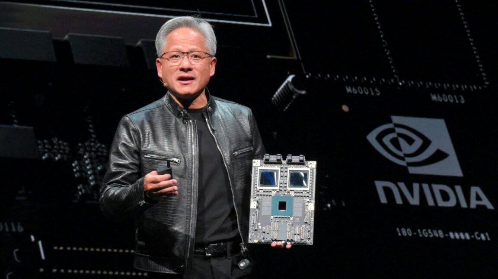

Technology · 10 Nov 2026
Nvidia CEO's affair becomes a national security problem

Nvidia is probing whether Chinese intelligence targeted its CEO through an affair.
Multiple independent publishers are reporting on the same development: Nvidia CEO's affair becomes a national security problem.
The available reports place the development in the Technology category. The accounts were compared for agreement on the central event rather than simply shared names or broad topics.
One of the available reports describes the development this way: Nvidia is probing whether Chinese intelligence targeted its CEO through an affair.
Readers should consult the linked source reports for additional context, updates and details that may change as the story develops.
Sources
This article was produced by the C. O. Eric AI Newsroom from the cited sources. It is published only after automated evidence and safety checks.